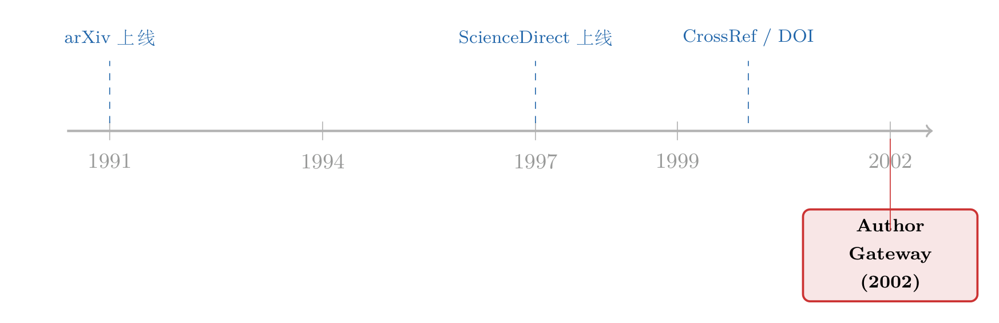

投稿、追踪、上架：一页 2002 年的广告，记下了学术写作「搬上网」的那一天
本文读的不是一篇论文，而是 Elsevier Science (2002, Journal of Financial Economics) 夹在期刊里的一页广告——「Author Gateway」。它没有数据、没有回归、没有结论，只有五个动词：find、submit、track、alerts、personalise。可正是这五个词，悄悄把一个作者和一本期刊之间几百年的关系，压缩成了一次登录。
1 一页没有结果的「论文」
先说清楚一件事：你手上这篇「JFE 论文」，其实根本不是论文。
它是一页广告。整页正文加起来不过一百多个英文词，外加两排圆点装饰符——在 PDF 的文字层里，它们被识别成了一串孤零零的 (cid:127)。没有摘要，没有假设，没有识别策略，没有稳健性检验。如果按我们平时读论文的那套清单去读它，你会在第一栏「研究问题」那里就卡住，然后合上文件，觉得自己被浪费了三分钟。
但请先别合上。因为一页广告之所以值得一读，恰恰是因为它不打算说服任何同行——它只想说服「你」，一个正打算投稿的作者。而广告最诚实的地方在于：它会把一个时代「最想卖给你的东西」直接印在纸上。1959 年的汽车广告卖的是尾翼，2002 年的这页广告卖的是什么？
答案是五个动词。
这已经不是本博客第一次读这类「夹在顶刊里的边角料」了。早些时候我们读过同一时期的另外几页广告——把整套 ScienceDirect 搬进一个搜索框的（见《1,200 种期刊塞进一个搜索框》），第一次给尘封过刊标上价格的（见《一页夹在顶刊里的广告：当尘封的「过刊」第一次被标上价格》）。它们和本文是同一套「数字考古」的不同切面：ScienceDirect 管的是读，Backfiles 管的是存，而 Author Gateway，管的是写。
2 五个动词，一条暗线
把那五个动词原样抄下来，它们的顺序本身就是一条叙事线：
- Find your journal —— 按标题、关键词或编辑搜索，按学科或刊名浏览；
- Submit your paper —— 拿到完整的投稿须知，能在线投的就在线投；
- Track your paper —— 从录用到见刊全程追踪（广告特意备注：这项服务以前叫 OASIS）；
- 给你喜欢的期刊设 alerts —— 用 ContentsDirect 把目录推到你邮箱；
- Personalise 你的主页 —— 建一个属于你自己的页面，一键直达你的稿件、期刊和邮件提醒。
首先注意到的，是这条线的起点和终点不一样。它从「find / submit」这种一次性的、交易性的动作开始，却落在「alerts / personalise」这种持续性的、关系性的动作上。换句话说，广告并不满足于帮你把这一篇稿子投出去——它想在你投完之后，把你留下来。
接着，一个自然的问题是：留下来干嘛？
留下来，是为了让你下一次还从这扇门进来。一旦你在 authors.elsevier.com 建了主页、设了提醒、把三五本目标期刊收进了「我的列表」，你和 Elsevier 之间就不再是「一稿一投」的陌生人关系，而是一个有账户、有历史、有默认选项的长期关系。这页广告底部那行小字——「helping you get published」——读起来像一句温柔的服务承诺，但它真正描述的，是一种新的绑定。
然后，真正关键的一步藏在那个不起眼的括号里：track「以前叫 OASIS」。
3 「以前叫 OASIS」——一句话里的整部前史
一则广告，凭什么要花宝贵的版面去告诉你某个功能「改名了」？
因为改名这件事，恰恰暴露了它不是从天而降的。OASIS 是 Elsevier 早就有的稿件追踪系统；Author Gateway 做的，不是发明一个新功能，而是把原本散落在各处的几样东西——一个搜索目录、一套投稿须知、一个改了名的追踪系统、一个邮件推送服务——收编进同一个入口。广告里那个词用得极准：integrated（整合的）online entry point。
这就是这页纸真正记录下来的事件。不是「Elsevier 上线了一个新网站」，而是「作者面对期刊的几十个分散触点，第一次被折叠成了一个网址」。在此之前，投稿是这样的：你查一本纸质的《作者须知》，把稿子打印三到四份，连同一封 cover letter 装进信封，贴上国际邮票，寄往编辑部所在的城市；然后是漫长的等待，你不知道稿子到没到、分给谁了、卡在哪一环——直到某天信箱里出现一封决定信。
于是反转出现了：Author Gateway 真正卖给作者的，从来不是「五个功能」，而是把投稿的摩擦成本砍到接近零。三份打印件、一趟邮局、一段杳无音讯的黑箱期，统统被一次登录、一个上传、一条状态栏取代。
而摩擦一旦消失，事情就不只是「方便」这么简单了。
4 摩擦归零之后，会发生什么
这是我想反复讲透的一个核心：当投一篇稿的成本从「一趟邮局」掉到「一次点击」，整个学术出版的经济学就被悄悄改写了。
道理并不玄。把作者要不要投稿，粗略地想成一个净收益的比较：投，是因为预期收益（被录用、被引用、被看见）超过了投稿的成本（金钱的、时间的、心理的）。在线投稿做的事，就是把右边那个成本项几乎抹平。成本一降，原本「算了，不值得寄一趟」的边际稿件，现在都会被投出来。
接着，一个自然的后果是：投稿量暴涨。每一本好期刊的编辑桌上，开始堆起越来越高的稿件。可期刊的版面是固定的，审稿人的时间是稀缺的。于是录用率被稀释，拒稿率攀升，审稿周期拉长——这正是过去二十年里每一位做研究的人都亲身体会过的「投稿越来越卷」。
然后，真正关键的一步在于：当「降低投稿成本」走到尽头、稿件多到编辑部处理不过来时，期刊会怎么办？
它会反过来，人为地把成本加回去。最直接的办法，就是收一笔投稿费——用价格这道闸门，把那些「反正点一下又不要钱」的边际稿件重新挡在门外。这条暗线，本博客后来正好读到过它的另一端：见《一封涨价通知里的微观经济学：当一本顶刊开始给「投稿」定价》。把那篇和这页广告放在一起读，你会看到一个完整的钟摆：2002 年，技术拼命把投稿成本往下压；二十年后，期刊又不得不用价格把它往上抬。 Author Gateway 是这个故事的上半场，投稿费是下半场。
这就是读一页广告的回报。它本身什么都没「证明」，但它精确地标定了一条因果链的起点：在线投稿 → 摩擦归零 → 投稿量膨胀 → 录用率稀释 → 价格闸门回归。中间每一环都早已有人写成了正经论文，唯独这个起点，只被一页没人会引用的广告记了下来。
5 它其实是一个「双边平台」的雏形
退一步看 Author Gateway 的五个动词，你会发现它们并不都是冲着「作者」去的。
find / submit / track，服务的是作为生产者的你——你来投稿。但 alerts / personalise，服务的是作为消费者的你——你来读别人的稿。同一个账户，同一个入口，左手收稿，右手送货。这在结构上，正是一个双边平台 (two-sided platform) 的胚胎：它一边连着写论文的人，一边连着读论文的人，而平台的价值，随着两边都被「锁」进同一套账户体系而水涨船高。
这也解释了那个看似多余的「personalise」为什么会出现在一页 2002 年的广告里。在那个连个人主页都还稀罕的年代，让一个学者「定制自己的首页」，听上去像是花哨的噱头。但平台的逻辑从不花哨：你越是把自己的偏好、历史、关注列表交给它，你迁移到别处的成本就越高。今天我们管这叫「数据护城河」「锁定效应」，2002 年的 Elsevier 把它写成了一句人畜无害的「create your own unique homepage」。
所以这页广告真正预告的，不是一个投稿网站，而是一种把学术写作彻底平台化的范式。后来发生的一切——稿件管理系统成为标配、开放获取与版面费之争、preprint 平台对传统期刊的冲击、乃至学者对「出版商垄断」的集体不满——都可以在这五个动词里找到最初的影子。
6 文献脉络：一段没有「文献」的脉络
老实说，这一节我本不该有。因为这页广告没有参考文献——PDF 里所谓的「References」一栏，逐字逐句又把广告正文重抄了一遍。它不站在任何学术对话里，也不引用任何人。
但「科研写作如何被搬上网」这件事，本身是有脉络的，只不过它的节点不是论文，而是一个个基础设施的诞生时刻。1991 年，物理学家把预印本扔上了 arXiv，第一次让「分发」绕开了期刊；1997 年，Elsevier 把上千本刊塞进了 ScienceDirect，让「阅读」搬上了网（这一页，本博客读过）；2000 年前后，CrossRef 与 DOI 给每篇文章发了「身份证」，让「引用」在网络里能彼此指认（关于 DOI 这件事，可参见《页码消失的那一天：JFE 给每篇文章发了一个「身份证」》）。而 2002 年的 Author Gateway，补上的是最后一块、也是离作者最近的一块——「写与投」。

把这条线排开看，你会发现一个朴素的规律：读、存、引、写，是被一件一件分别搬上网的，而不是一次性。我们今天习以为常的「打开浏览器、登录、上传、查状态」，其实是二十多年里一块一块拼起来的。这页广告，是其中的一块拼图被印上纸的瞬间。
7 评论与延伸（Q&A + 研究方向）
(a) 几个可能的疑问
Q：把一页广告当论文来评述，是不是太牵强了？
如果你要的是方法论上的收获，那确实牵强——它没有任何可供学习的识别策略。但如果你把它当成一份一手史料，它的价值反而比许多论文更稀缺：它不加修饰地告诉你，2002 年一家最大的学术出版商，认为「作者最想要什么」。研究者写论文时会美化动机，广告不会——广告只把最好卖的东西摆出来。
Q：在线投稿真的「降低」了投稿成本吗，会不会只是把纸质流程原样照搬？
早期确有「电子化即扫描」的过渡形态。但 Author Gateway 的关键词是 integrated——它把 find / submit / track 串成一条无断点的流水线，省掉的不只是邮费，更是信息黑箱（track 那一项）。摩擦的下降，金钱成本只是一小块，时间与不确定性的下降才是大头。
Q：「投稿费」真的是「投稿成本归零」的直接后果吗，会不会是别的原因？
我不会把它说成唯一原因——版面成本、审稿人短缺、掠夺性期刊的兴起都在推波助澜。但逻辑上，价格闸门最自然的触发条件，正是「免费投稿导致边际稿件泛滥」。本文只负责标定这条链的起点，链的另一端（期刊用两阶段评审加投稿费来筛选）已经有专门的论文去验证。
Q：把作者「锁」进一个账户体系，对学术界是好事还是坏事？
一体两面。对作者，它实实在在地省了事；对系统，它把巨大的议价权交给了少数几家出版商——后来开放获取运动、各国图书馆与 Elsevier 的「断订」谈判，根子都在这里。一页 2002 年讲「便利」的广告，埋下的是二十年后讲「垄断」的争论。
Q：这跟「双边平台」的标准定义对得上吗？
对得上一半。标准双边平台（如交易所、信用卡）的两边是不同的人群；而期刊平台的妙处在于，两边常常是同一批人——你今天是作者，明天就是读者和审稿人。这种「身份重叠」让锁定效应格外强，也让这门生意格外难被颠覆。
Q：既然没有数据，本文的「结论」可信吗？
本文（这篇评述）不主张任何因果结论，只主张一个史料定位：在线投稿平台的成型，有一个可考的时间戳，而它后续的经济学后果是可被独立检验的。这一点不依赖广告里的任何数字——广告里本来也没有数字。
(b) 几个可能的研究问题与提案
1. 在线投稿系统上线，是否真的抬高了一本期刊的投稿量与拒稿率？ - 【经济故事】这是本文那条暗线最直接的检验：摩擦归零 → 投稿膨胀。不同期刊在不同年份切换到电子投稿系统（Editorial Manager、ScholarOne 等），构成了一个交错的处理时点。 - 【可行性】中。处理时点可从期刊网站存档与系统供应商资料考据；结果变量（年投稿量、录用率、审稿周期）部分可从期刊年度报告或编辑致辞中获得。难点是投稿量数据往往不公开，需要逐刊手工搜集，且要小心交错双重差分的偏误（关于这一点，可参见《当「更稳健」的设计悄悄把符号弄反了——重读交错双重差分》）。
2. 投稿成本下降，是「普惠」了边缘作者，还是放大了既有的马太效应？ - 【经济故事】成本归零，理论上对预算紧、地处偏远的作者最友好（他们原本连国际邮费都要掂量）。但若编辑在洪水般的来稿里更依赖「机构声誉」这种快捷启发，结果反而可能是强者愈强。这是一个方向不明、值得实证的张力。 - 【可行性】中到低。需要长跨度的作者层面元数据（机构、国别、署名顺序），可借 Scopus/Web of Science 的作者画像；识别上较难找到干净的外生冲击，更像描述性证据。
3. 「个性化主页 + 邮件提醒」这类锁定功能，能否度量它带来的作者留存？ - 【经济故事】把 personalise 视为一次平台锁定实验：设了提醒、建了主页的作者，是否更可能把下一篇也投给同一出版商旗下的刊？这是把「数据护城河」从概念做成可测量的留存率。 - 【可行性】低。最干净的数据握在出版商手里，外部研究者几乎拿不到账户级行为日志；只能退而求其次，用作者连续发表的「出版商粘性」做粗略代理。
4. 在线投稿的扩散，与「掠夺性期刊」的兴起，在时间与地理上是否同源？ - 【经济故事】把投稿成本压到零的同一项技术，既降低了正规期刊的门槛，也降低了开一本假期刊的门槛。两者会不会是同一枚硬币的两面？ - 【可行性】中。掠夺性期刊清单（如已停更的 Beall's List 存档）可提供样本；与电子投稿普及率、各国科研激励制度交叉，能讲出一个有说服力的描述性故事，但因果识别偏弱。
8 我的判断
先说它不是什么：它不是一篇论文，没有可学习的方法，没有可复制的设计，把它放进任何一份文献综述都会显得荒诞。
但作为一份史料，我给它很高的评价。它用一百多个词、五个动词，干净利落地标定了一个常被忽略的转折点：作者与期刊之间那道几百年未变的、由纸张和邮局构成的摩擦，在 2002 年前后被一次登录抹平了。而摩擦的消失从来不是免费的午餐——它把投稿量推高、把录用率压低、最终逼出了投稿费这道反向闸门，也把学者一步步「锁」进了少数几家平台。这条因果链的下游早已是论文密布，唯独它的起点，只剩这页没人引用的广告替我们记着。
对「识别」的担忧？这里没有识别可谈——本文不主张因果，只主张定位。我唯一要提醒的是：别把广告的修辞当成历史的事实。「helping you get published」是一句营销话术，它描述的善意（帮你发表）和它实现的结构（把你留下），并不是同一回事。读这类材料，要永远把「它想让你感受到什么」和「它实际改变了什么」分开来看。
后续我最想看到的，是上面第 1 个提案能被真正做出来：找到一批期刊切换电子投稿的确切时点，用交错 DiD 去量一量投稿量和审稿周期的跳变。如果那个跳变真的存在、且足够大，那么这页 2002 年的广告，就不只是一份怀旧的史料——它会成为一整条经济学因果链的、有名有姓的第一块多米诺骨牌。
参考文献
- Elsevier Science (2002). Author Gateway: The integrated online entry point for all your submission needs. Advertisement, Journal of Financial Economics. (http://authors.elsevier.com)